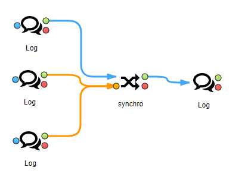
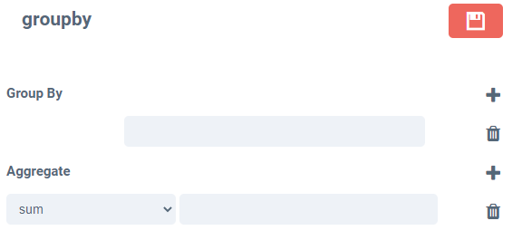

General
A node has
- main input (in1)
- optional input (in2)
- main output
- error output
 Synchronize
Synchronize- in1
- in2
- in1
- error
- Crtl+Alt+c : copy node
- Crtl+Alt+v : paste node
- Crtl+s: save node
- Crtl+entr: run flow
- Crtl++ zoom in
- Crtl+- zoom out
- Shift mousewheel zoom in or out

Group by
You can add index and aggregate (sum, min, max, mean, count, ...)

Jinja
You can generate file from in1 with jinja languageYou can save file on local server or sftp server.
the jinja script from local server or string.
You can test jinja node with this flow
New from 0.8.5
You can use filter:
- columns
- rows
- rows_of_dict
<div class="siimple-table">
<div class="siimple-table-header">
<div class="siimple-table-row">
{% for col in in1 | columns %}
<div class="siimple-table-cell">{{ col }}</div>
{% endfor %}
</div>
</div>
<div class="siimple-table-body">
{% for row in in1 | rows %}
<div class="siimple-table-row">
{% for val in row %}
<div class="siimple-table-cell">{{ val }}</div>
{% endfor %}
</div>
{% endfor %}
</div>
</div>
Mail
You can send file with smtp server. The file is a local file or a file from input.
 Display
DisplayYou can add a limit of row.
 For-each
For-eachCode
You add your owner python code.The next node receive the out variable
type of step:
- drop column
- rename column
- query filter
- sort
- change type
- sort
- pivot
- limit row
- add column
Subflow
You can run flow with env and version data
data- database mysql
- database pgsql
- database sqlite
- database mysql
- file json
- file csv
- file xlsx
- file xml
New from 0.8.3
- file fixed-with formatted
- local server
- sftp server
New from 0.8.2
- webdav server
New from 0.9.0
- ftp
- sharepoint365: you need indicate the name of file in path and the url of site and the url of file
- GoogleDrive: you need indicate the json secret of accountservice and enable GoogleDrive APIon GCP
 log
logYou can send to basic log, syslog (only linux) or graylog
 link
link
New from 0.8.5
Comment
you can add a comment in your flow
New from 0.8.5
Extra Nodes
You can create your owner node in the path <BAMBOU_PATH>/nodesextra. In <BAMBOU_PATH>/nodesextra you can find a sample node.